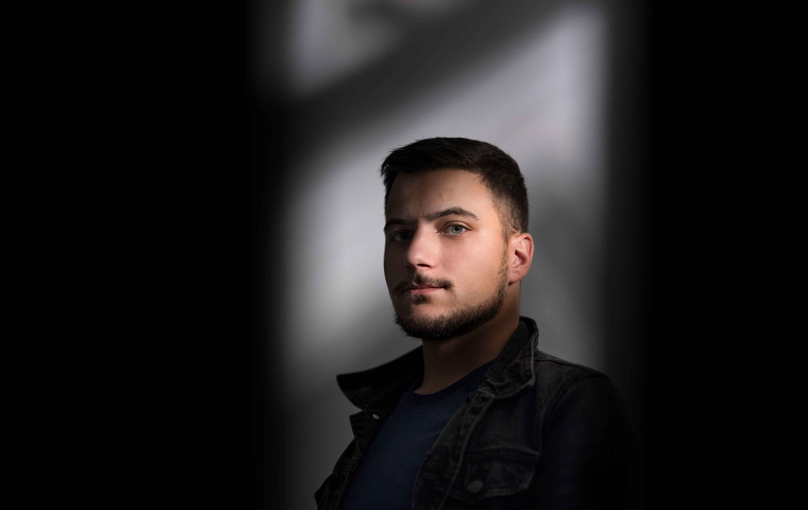

Базиран съм в Пловдив, с опит в рекламната, сватбената и семейна фотография. Зад гърба си имам успешни кампании, заснети в Италия, Швейцария и България.
Сватбената фотография заема специално място в моята работа. До момента съм заснел над 60 сватби, всяка една различна история за истинска любов и незабравим ден. Заснемам и кръщенета, изпълнени с емоция, които заслужават да бъдат разказани по същия внимателен начин.
Имал съм удоволствието да работя с утвърдени марки като Zarena, La Morelle, Sprint и съм участвал в постпродукцията за e-commerce на Canali, Roger Vivier, Fay, Hogan, YOOX и други.
Мои кадри можете да срещнете по страниците на Elle, Malvie, Marika. Част от Create Studios.